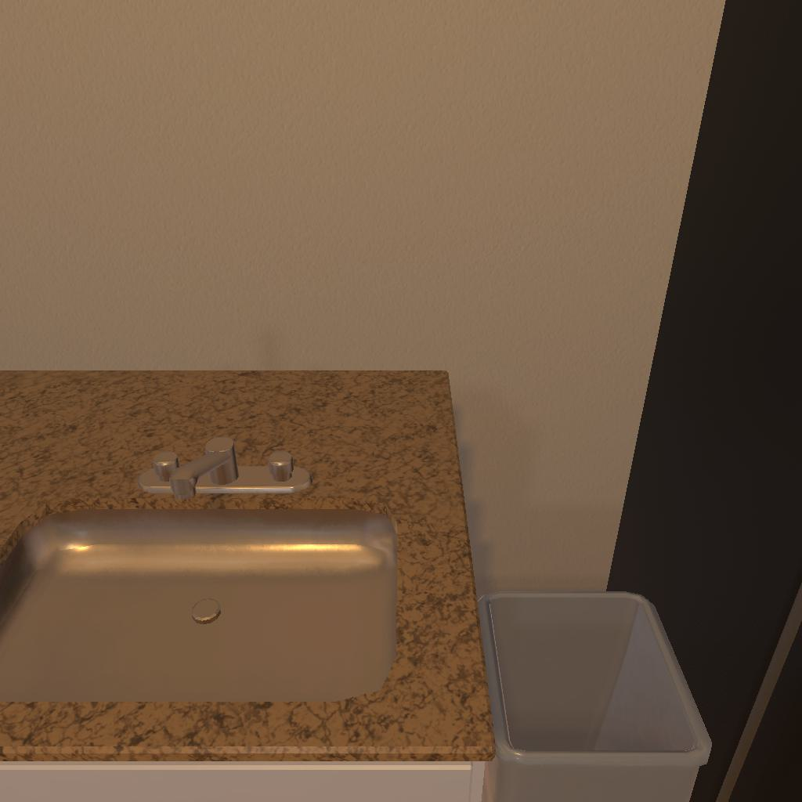
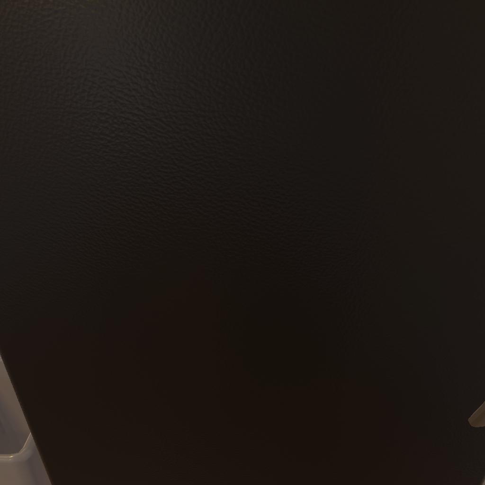

---------------------------------------------------------task: 13---------------------------------------------------------
--------------------------------------------------------------------------------------------------------------------------------------------------------------------
--------------------------------------------------------------------------------------------------------------------------------------------------------------------
Step:--------------------------------------------------------------------------1-------------------------------------------------------------------------------
----------------------------------------
VLM Prompt:
Image1:
Image2:
**Instruction**
1. Analyze the provided images to identify all visible household objects and compare the difference between images (e.h. whether the object is opened or not and taken on hand or not), focusing on those relevant to the task description "put a clean tomato in garbagecan."
2. Use the analysis of images and the task hint "The agent must find an object of the desired type, pick it up, go to a sink or a basin, clean the object with a sink or basin, and then find the correct location to place it and put it down there. The agent does not need to use soap bottle or faucet to clean the object, and the agent just needs to do action that is "clean the object with the sink or sink basin"." to answer the question: what is the most reasonable action in the choices for the task description "put a clean tomato in garbagecan"?
3. Decide and write the answer using the template: The answer is: (i): , where i is the real number. If there is no desired object in images, search every place based on **Initial Observation** to find the object. And if no one is exactly correct, choose a similar answer.
**Initial Observation**
You are in the middle of a room. Looking quickly around you, you can see countertop (1-2), cabinet (1-11), garbagecan (1), toaster (1), sinkbasin (1), fridge (1), sink (1), microwave (1), drawer (1-3), stoveburner (1-4), coffeemachine (1), diningtable (1)
**Answer Choices**
(1): go to countertop 1
(2): go to cabinet 1
(3): go to cabinet 2
(4): go to cabinet 3
(5): go to garbagecan 1
(6): go to cabinet 4
(7): go to toaster 1
(8): go to sinkbasin 1
(9): go to sink 1
(10): go to cabinet 5
(11): go to microwave 1
(12): go to countertop 2
(13): go to cabinet 6
(14): go to cabinet 7
(15): go to drawer 1
(16): go to stoveburner 1
(17): go to stoveburner 2
(18): go to cabinet 8
(19): go to drawer 2
(20): go to stoveburner 3
(21): go to stoveburner 4
(22): go to coffeemachine 1
(23): go to cabinet 9
(24): go to cabinet 10
(25): go to cabinet 11
(26): go to diningtable 1
(27): go to drawer 3
(28): open fridge 1
(29): close fridge 1
(30): examine fridge 1
**Answer**
Let's think step by step by following the instructions.
----------------------------------------
----------------------------------------
Original Response:
Firstly, we analyze the provided images:
Image 1 shows a sink basin with a faucet on a countertop and a garbage can next to it. There are no tomatoes or other objects visible in this image that can be identified as "clean" or "dirty."
Image 2 is a dark image with no distinguishable features or objects. It seems irrelevant to the task at hand.
Comparing the difference between images, we can conclude that Image 2 does not provide any additional information for the task.
Based on the task description and the hint provided, the agent needs to find a tomato, clean it in the sink or basin, and then put it in the garbage can. Since no tomato is visible in the provided images, the agent must search every place based on the Initial Observation to find the object.
Considering the Initial Observation, the most reasonable places to find a tomato would be locations where food or kitchen items are stored, such as the countertop, cabinet, fridge, or drawer.
The answer is: (28): open fridge 1
This action is the most reasonable because tomatoes are commonly stored in a fridge, and opening the fridge would be the first step in locating one. After finding the tomato, the agent can then proceed with cleaning it at the sink or basin (which is visible in Image 1) and finally placing it in the garbage can.
----------------------------------------
----------------------------------------
>>> Refine Original VLM Response and Get Pure Action: open fridge 1
This action is the most reasonable because tomatoes are commonly stored in a fridge, and opening the fridge would be the first step in locating one
----------------------------------------
-----------------------------------------------------------------
Running time: 14.711633205413818 seconds
Total Money: 6.9664900000000065
-----------------------------------------------------------------
-----------------------------------------------------------------
Text Observation:Nothing happens.
-----------------------------------------------------------------
UNSUCCEED